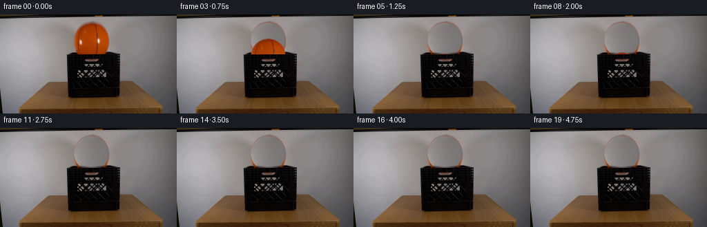
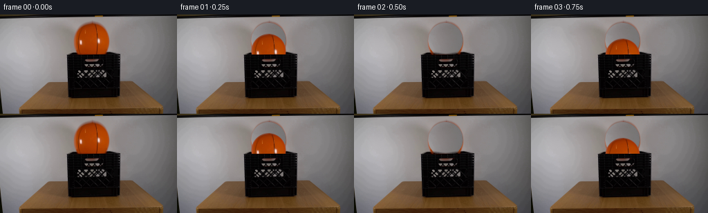
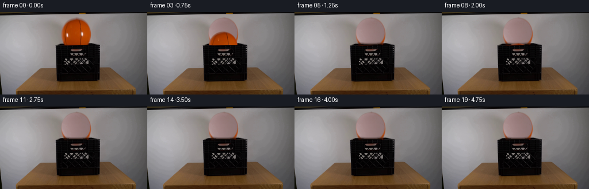
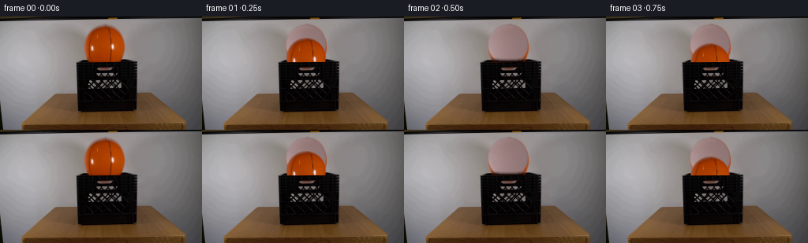

CODING AGENTS AS PIXEL WORLD MODELS
traex/DeepSeek-V4.1-Flash · 0014
点击播放 · 原生 RGB 像素
逐轮保存的候选
回放视频、检查图与代码变化。
每份候选均可单独播放。实际图片检查记录在下方工具轨迹中。
候选 01播放与检查图
点击播放 · 原生 RGB 像素


展开代码变化
--- 上一保存版本
+++ 本次保存版本
@@ -0,0 +1,220 @@
+from pathlib import Path
+
+import cv2
+import numpy as np
+from PIL import Image
+
+import artifact_io
+
+
+CASE_DIR = Path(__file__).resolve().parent
+WIDTH, HEIGHT = 256, 144
+FPS = 4
+FRAME_COUNT = 20
+
+# The sphere is partly hidden by the crate's front lip in the source frame.
+BALL_CENTER = (132.5, 37.2)
+BALL_RADIUS = 25.5
+CRATE_FRONT = (96, 58, 177, 123)
+
+
+def smoothstep(edge0, edge1, value):
+ t = np.clip((value - edge0) / (edge1 - edge0), 0.0, 1.0)
+ return t * t * (3.0 - 2.0 * t)
+
+
+def ball_alpha(shape):
+ yy, xx = np.mgrid[: shape[0], : shape[1]]
+ dx = (xx + 0.5 - BALL_CENTER[0]) / BALL_RADIUS
+ dy = (yy + 0.5 - BALL_CENTER[1]) / BALL_RADIUS
+ radius = np.sqrt(dx * dx + dy * dy)
+ return 1.0 - smoothstep(0.965, 1.015, radius)
+
+
+def rebuild_wall(frame):
+ """Replace the source ball with a locally sampled continuation of the wall."""
+ plate = frame.astype(np.float32).copy()
+ alpha = ball_alpha(frame.shape[:2])
+ mask = alpha > 0.001
+ ys, xs = np.where(mask)
+ y0, y1 = ys.min(), ys.max() + 1
+ x0, x1 = xs.min(), xs.max() + 1
+
+ # The wall is nearly neutral with a gentle horizontal light falloff. Two
+ # nearby clean strips retain the original grain while following that falloff.
+ clean_left = frame[:, 54:105].astype(np.float32)
+ clean_right = frame[:, 160:211].astype(np.float32)
+ width = x1 - x0
+ left = clean_left[:, :width]
+ right = clean_right[:, :width]
+ blend = np.linspace(0.0, 1.0, width, dtype=np.float32)[None, :, None]
+ wall = left * (1.0 - blend) + right * blend
+
+ # Match the sampled strips to the local illumination at the ball's edges.
+ edge_pixels = []
+ for yy, xx in zip(ys, xs):
+ if not mask[max(0, yy - 2) : yy + 3, max(0, xx - 2) : xx + 3].all():
+ edge_pixels.append(frame[yy, xx])
+ local_mean = np.mean(edge_pixels, axis=0) if edge_pixels else wall[y0:y1].mean((0, 1))
+ patch_mean = wall[y0:y1].mean((0, 1))
+ wall += np.clip(local_mean - patch_mean, -16.0, 16.0)
+
+ wall_pixels = wall[y0:y1, :]
+ region_alpha = alpha[y0:y1, x0:x1, None]
+ plate[y0:y1, x0:x1] = (
+ wall_pixels * region_alpha + plate[y0:y1, x0:x1] * (1.0 - region_alpha)
+ )
+
+ # The lowest few pixels belong to the crate mouth, not the wall. Inpaint
+ # those pixels and then retain the untouched crate silhouette below the lip.
+ lower_mask = np.zeros((HEIGHT, WIDTH), np.uint8)
+ lower_mask[mask & (np.mgrid[:HEIGHT, :WIDTH][0] >= 53)] = 255
+ lower_mask = cv2.dilate(lower_mask, np.ones((3, 3), np.uint8), iterations=1)
+ inpainted = cv2.inpaint(
+ np.clip(plate, 0, 255).astype(np.uint8),
+ lower_mask,
+ 5,
+ cv2.INPAINT_TELEA,
+ ).astype(np.float32)
+ lower_alpha = smoothstep(52.0, 57.0, np.mgrid[:HEIGHT, :WIDTH][0])[..., None]
+ plate = plate * (1.0 - lower_alpha) + inpainted * lower_alpha
+ return np.clip(plate, 0, 255).astype(np.uint8)
+
+
+def make_ball_sprite(frame):
+ margin = 31
+ cx, cy = BALL_CENTER
+ x0 = int(np.floor(cx)) - margin
+ y0 = int(np.floor(cy)) - margin
+ x1, y1 = x0 + 2 * margin + 1, y0 + 2 * margin + 1
+ patch = frame[y0:y1, x0:x1].copy()
+
+ yy, xx = np.mgrid[y0:y1, x0:x1]
+ dx = (xx + 0.5 - cx) / BALL_RADIUS
+ dy = (yy + 0.5 - cy) / BALL_RADIUS
+ radial = np.sqrt(dx * dx + dy * dy)
+ alpha = 1.0 - smoothstep(0.955, 1.005, radial)
+
+ # Suppress the one-pixel gray fringe present at the photographed rim.
+ rim = smoothstep(0.82, 0.98, radial)
+ inner = cv2.GaussianBlur(patch, (0, 0), 1.25)
+ orange_pull = np.array([1.0, 0.63, 0.38], dtype=np.float32)[None, None, :]
+ pulled = patch.astype(np.float32) * (1.0 - 0.55 * rim[..., None])
+ pulled += inner.astype(np.float32) * orange_pull * (0.55 * rim[..., None])
+ rgb = np.clip(pulled, 0, 255).astype(np.uint8)
+ rgba = np.dstack([rgb, (alpha * 255).round().astype(np.uint8)])
+ return rgba
+
+
+def composite_ball(frame, sprite, center_y):
+ cx, cy = BALL_CENTER
+ shift_y = int(round(center_y - cy))
+ h, w = frame.shape[:2]
+ sh, sw = sprite.shape[:2]
+ out = frame.astype(np.float32)
+
+ src_x0 = max(0, -0)
+ src_y0 = max(0, -shift_y)
+ dst_x0 = int(cx) - sw // 2
+ dst_y0 = int(cy) - sh // 2 + shift_y
+ src_x1 = sw
+ src_y1 = min(sh, h - dst_y0)
+ dst_x1 = dst_x0 + src_x1
+ dst_y1 = dst_y0 + src_y1
+
+ if dst_y0 < 0:
+ src_y0 = -dst_y0
+ dst_y0 = 0
+ if dst_x0 < 0:
+ src_x0 = -dst_x0
+ dst_x0 = 0
+ if dst_x1 > w:
+ src_x1 -= dst_x1 - w
+ dst_x1 = w
+ if dst_y1 > h:
+ src_y1 -= dst_y1 - h
+ dst_y1 = h
+
+ piece = sprite[src_y0:src_y1, src_x0:src_x1]
+ if piece.size == 0:
+ return frame
+ a = piece[..., 3:4].astype(np.float32) / 255.0
+ out[dst_y0:dst_y1, dst_x0:dst_x1] = (
+ piece[..., :3].astype(np.float32) * a
+ + out[dst_y0:dst_y1, dst_x0:dst_x1] * (1.0 - a)
+ )
+ return np.clip(out, 0, 255).astype(np.uint8)
+
+
+def restore_crate_front(frame, source):
+ """Make the crate's front face occlude anything that has fallen behind it."""
+ x0, y0, x1, y1 = CRATE_FRONT
+ out = frame.copy()
+ out[y0:y1, x0:x1] = source[y0:y1, x0:x1]
+ return out
+
+
+def vertical_positions():
+ """Analytic gravity with successive damped rebounds inside the crate."""
+ gravity = 520.0
+ floor_y = 92.0
+ start_y = BALL_CENTER[1]
+ restitution = 0.78
+ start_time = 0.0
+ velocity = 0.0
+ segment_start_y = start_y
+ segment_start_t = start_time
+ segment_velocity = velocity
+
+ positions = []
+ for index in range(FRAME_COUNT):
+ t = index / FPS
+ while True:
+ dt = t - segment_start_t
+ y = segment_start_y + segment_velocity * dt + 0.5 * gravity * dt * dt
+ if y < floor_y:
+ break
+
+ # Solve the exact time at which the sphere reaches the crate floor.
+ disc = segment_velocity**2 + 2.0 * gravity * (floor_y - segment_start_y)
+ impact_dt = (-segment_velocity + np.sqrt(max(0.0, disc))) / gravity
+ impact_time = segment_start_t + impact_dt
+ if impact_time > t:
+ break
+ impact_speed = segment_velocity + gravity * impact_dt
+ segment_start_t = impact_time
+ segment_start_y = floor_y
+ segment_velocity = -restitution * impact_speed
+
+ # Stop the small residual bounce after it can no longer clear the lip.
+ if abs(segment_velocity) < 62.0:
+ segment_velocity = 0.0
+ segment_start_y = floor_y
+ y = floor_y
+ break
+ positions.append(float(np.clip(y, start_y, floor_y)))
+ return positions
+
+
+def main():
+ source = np.array(Image.open(CASE_DIR / "first_frame.png").convert("RGB"))
+ assert source.shape == (HEIGHT, WIDTH, 3)
+
+ plate = rebuild_wall(source)
+ sprite = make_ball_sprite(source)
+ positions = vertical_positions()
+
+ frames = [source.copy()]
+ for y in positions[1:]:
+ frame = composite_ball(plate, sprite, y)
+ frame = restore_crate_front(frame, source)
+ frames.append(frame)
+
+ frames = np.stack(frames).astype(np.uint8)
+ assert frames.shape == (FRAME_COUNT, HEIGHT, WIDTH, 3)
+ assert np.array_equal(frames[0], source)
+ artifact_io.save(frames, CASE_DIR)
+
+
+if __name__ == "__main__":
+ main()
候选 02播放与检查图
点击播放 · 原生 RGB 像素


展开代码变化
--- 上一保存版本
+++ 本次保存版本
@@ -13,8 +13,8 @@
FRAME_COUNT = 20
# The sphere is partly hidden by the crate's front lip in the source frame.
-BALL_CENTER = (132.5, 37.2)
-BALL_RADIUS = 25.5
+BALL_CENTER = (132.0, 36.0)
+BALL_RADIUS = 25.7
CRATE_FRONT = (96, 58, 177, 123)
@@ -28,7 +28,10 @@
dx = (xx + 0.5 - BALL_CENTER[0]) / BALL_RADIUS
dy = (yy + 0.5 - BALL_CENTER[1]) / BALL_RADIUS
radius = np.sqrt(dx * dx + dy * dy)
- return 1.0 - smoothstep(0.965, 1.015, radius)
+ alpha = 1.0 - smoothstep(0.93, 1.025, radius)
+ # The photographed sphere disappears behind the crate lip at y=58.
+ alpha *= 1.0 - smoothstep(54.0, 58.0, yy + 0.5)
+ return alpha
def rebuild_wall(frame):
@@ -45,8 +48,12 @@
clean_left = frame[:, 54:105].astype(np.float32)
clean_right = frame[:, 160:211].astype(np.float32)
width = x1 - x0
- left = clean_left[:, :width]
- right = clean_right[:, :width]
+ left = clean_left[:, : min(width, clean_left.shape[1])]
+ right = clean_right[:, : min(width, clean_right.shape[1])]
+ if width > clean_left.shape[1]:
+ pad = width - clean_left.shape[1]
+ left = np.pad(left, ((0, 0), (0, pad), (0, 0)), mode="edge")
+ right = np.pad(right, ((0, 0), (0, pad), (0, 0)), mode="edge")
blend = np.linspace(0.0, 1.0, width, dtype=np.float32)[None, :, None]
wall = left * (1.0 - blend) + right * blend
@@ -68,15 +75,15 @@
# The lowest few pixels belong to the crate mouth, not the wall. Inpaint
# those pixels and then retain the untouched crate silhouette below the lip.
lower_mask = np.zeros((HEIGHT, WIDTH), np.uint8)
- lower_mask[mask & (np.mgrid[:HEIGHT, :WIDTH][0] >= 53)] = 255
- lower_mask = cv2.dilate(lower_mask, np.ones((3, 3), np.uint8), iterations=1)
+ lower_mask[mask & (np.mgrid[:HEIGHT, :WIDTH][0] >= 51)] = 255
+ lower_mask = cv2.dilate(lower_mask, np.ones((5, 5), np.uint8), iterations=1)
inpainted = cv2.inpaint(
np.clip(plate, 0, 255).astype(np.uint8),
lower_mask,
5,
cv2.INPAINT_TELEA,
).astype(np.float32)
- lower_alpha = smoothstep(52.0, 57.0, np.mgrid[:HEIGHT, :WIDTH][0])[..., None]
+ lower_alpha = smoothstep(49.0, 58.0, np.mgrid[:HEIGHT, :WIDTH][0])[..., None]
plate = plate * (1.0 - lower_alpha) + inpainted * lower_alpha
return np.clip(plate, 0, 255).astype(np.uint8)
@@ -93,10 +100,11 @@
dx = (xx + 0.5 - cx) / BALL_RADIUS
dy = (yy + 0.5 - cy) / BALL_RADIUS
radial = np.sqrt(dx * dx + dy * dy)
- alpha = 1.0 - smoothstep(0.955, 1.005, radial)
+ alpha = 1.0 - smoothstep(0.925, 1.005, radial)
+ alpha *= 1.0 - smoothstep(0.94, 1.0, (yy + 0.5 - cy) / BALL_RADIUS)
# Suppress the one-pixel gray fringe present at the photographed rim.
- rim = smoothstep(0.82, 0.98, radial)
+ rim = smoothstep(0.80, 0.96, radial)
inner = cv2.GaussianBlur(patch, (0, 0), 1.25)
orange_pull = np.array([1.0, 0.63, 0.38], dtype=np.float32)[None, None, :]
pulled = patch.astype(np.float32) * (1.0 - 0.55 * rim[..., None])
@@ -157,7 +165,7 @@
def vertical_positions():
"""Analytic gravity with successive damped rebounds inside the crate."""
gravity = 520.0
- floor_y = 92.0
+ floor_y = 91.0
start_y = BALL_CENTER[1]
restitution = 0.78
start_time = 0.0
@@ -187,7 +195,7 @@
segment_velocity = -restitution * impact_speed
# Stop the small residual bounce after it can no longer clear the lip.
- if abs(segment_velocity) < 62.0:
+ if abs(segment_velocity) < 70.0:
segment_velocity = 0.0
segment_start_y = floor_y
y = floor_y
可观测工具轨迹
实际执行的命令与返回图片。
命令 1exit 0
/bin/bash -c "pwd && rg --files -g 'prompt.txt' -g 'GENERATION_RULES.md' -g 'first_frame.png' -g '"'!node_modules'"' -g '"'!venv'"'"
命令 2exit 0
/bin/bash -c 'git status --short'
命令 3exit 0
/bin/bash -c 'cat GENERATION_RULES.md'
命令 4exit 0
/bin/bash -c 'cat prompt.txt'
命令 5exit 0
/bin/bash -c 'file first_frame.png && identify first_frame.png 2>/dev/null || true'
命令 6exit 0
/bin/bash -c 'ls -la && rg --files'
命令 7exit 0
/bin/bash -c "sed -n '1,240p' artifact_io.py"
命令 8exit 0
/bin/bash -c "python - <<'PY'
from PIL import Image
im=Image.open('first_frame.png')
print(im.mode, im.size, im.info)
print(im.getbbox())
PY"命令 9exit 0
/bin/bash -c "python - <<'PY'
from PIL import Image
import numpy as np
from collections import Counter
im=np.array(Image.open('first_frame.png'))
print('shape', im.shape)
# coarse 8x8 block means
small=np.array(Image.fromarray(im).resize((64,36), Image.Resampling.BOX))
# color grid using chars via nearest named colors? print RGB means per 16x16 blocks
for y in range(0,144,16):
row=[]
for x in range(0,256,16):
c=im[y:y+16,x:x+16].mean((0,1)).astype(int)
row.append('%02x%02x%02x'%tuple(c))
print('%3d '%y+' '.join(row))
# common quantized colors
q=(im//16)*16
cols,cnts=np.unique(q.reshape(-1,3),axis=0,return_counts=True)
for c,n in sorted(zip(cols,cnts),key=lambda z:-z[1])[:20]: print(tuple(c),n)
# orange pixels bbox and black
r,g,b=im[:,:,0],im[:,:,1],im[:,:,2]
masks={'orange':(r>100)&(r>g*1.25)&(g>b*1.1),'black':(r<45)&(g<45)&(b<45),'wood':(r>60)&(r>g*1.1)&(g>b*1.2)}
for name,m in masks.items():
ys,xs=np.where(m)
print(name, m.sum(), 'bbox', (xs.min(),ys.min(),xs.max(),ys.max()) if len(xs) else None)
PY"命令 10exit 0
/bin/bash -c "python - <<'PY'
try:
import cv2; print('cv2',cv2.__version__)
except Exception as e: print('no cv2',e)
try:
import scipy; print('scipy',scipy.__version__)
except Exception as e: print('no scipy',e)
PY"命令 11exit 0
/bin/bash -c "python - <<'PY'
import cv2, numpy as np
im=cv2.imread('first_frame.png')[:,:,::-1]
hsv=cv2.cvtColor(im,cv2.COLOR_RGB2HSV)
H,S,V=[hsv[:,:,i] for i in range(3)]
# orange saturated and red-orange
m=(S>120)&(V>80)&(((H<30)|(H>170)))
num,lab,stats,cent=cv2.connectedComponentsWithStats(m.astype('uint8'),8)
for i in sorted(range(1,num),key=lambda i:-stats[i,4])[:20]:
x,y,w,h,a=stats[i]; print('orange',i,'area',a,'bbox',x,y,w,h,'cent',cent[i])
# dark mask local
m2=(V<55)
num,lab,stats,cent=cv2.connectedComponentsWithStats(m2.astype('uint8'),8)
for i in sorted(range(1,num),key=lambda i:-stats[i,4])[:20]:
x,y,w,h,a=stats[i]; print('dark',i,'area',a,'bbox',x,y,w,h,'cent',cent[i])
# row/col color summaries at every 8 px: top saturated orange and dark counts
for y in range(0,144,8):
line=[]
for x in range(0,256,8):
hh=hsv[y:y+8,x:x+8]
so=((hh[:,:,1]>120)&(hh[:,:,2]>80)&(((hh[:,:,0]<30)|(hh[:,:,0]>170)))).mean()
dk=(hh[:,:,2]<55).mean()
br=hh[:,:,2].mean()
if so>.3: c='O'
elif dk>.5:c='#'
elif dk>.15:c='x'
elif br>170:c='W'
elif br>110:c='w'
elif br>60:c='g'
else:c='.'
line.append(c)
print(f'{y:3d}', ''.join(line))
PY"命令 12exit 0
/bin/bash -c "python - <<'PY'
from PIL import Image
import numpy as np
im=np.array(Image.open('first_frame.png').convert('RGB')).astype(float)
# downsample 4x4 blocks and ascii based on hue/lum
for y in range(0,144,4):
row=''
for x in range(0,256,4):
b=im[y:y+4,x:x+4].mean((0,1)); r,g,bl=b
if max(b)<30: ch='#'
elif r>1.35*g and r>1.5*bl and r>85: ch='O'
elif r>g*1.15 and g>bl*1.15 and r>60: ch='w'
elif abs(r-g)<20 and abs(g-bl)<20:
ch='@' if r>180 else 'X' if r>145 else 'x' if r>105 else ':' if r>65 else '.'
else: ch='?'
row+=ch
print(f'{y:3d} {row}')
PY"命令 13exit 0
/bin/bash -c "python - <<'PY'
from PIL import Image
import numpy as np, cv2
im=np.array(Image.open('first_frame.png').convert('RGB'))
hsv=cv2.cvtColor(im,cv2.COLOR_RGB2HSV)
for y in range(46,68):
row=''
for x in range(92,180):
r,g,b=im[y,x]; h,s,v=hsv[y,x]
if v<45: ch='#'
elif s>120 and (h<35 or h>170) and v>70: ch='O'
elif r>1.15*g and g>1.1*b: ch='w'
elif v>180: ch='@'
elif v>135: ch='X'
elif v>90: ch='x'
elif v>55: ch=':'
else: ch='.'
row+=ch
print(f'{y:3d} {row}')
print('ball pixel colors center and rim:')
for y in [12,15,20,25,30,35,40,45,50,55,57,58]:
print(y, [tuple(im[y,x]) for x in [107,110,115,120,125,130,135,140,145,150,155,158]])
PY"命令 14exit 0
/bin/bash -c 'python generate.py'
命令 15exit 0
/bin/bash -c "python - <<'PY'
from PIL import Image
import numpy as np, importlib.util
spec=importlib.util.spec_from_file_location('g','generate.py'); g=importlib.util.module_from_spec(spec); spec.loader.exec_module(g)
print('positions:', [round(v,2) for v in g.vertical_positions()])
src=np.array(Image.open('first_frame.png'))
out0=np.array(Image.open('frames/00.png'))
print('frame0 exact:', np.array_equal(src,out0))
for i in range(20):
a=np.array(Image.open(f'frames/{i:02d}.png')).astype(int)
diff=np.abs(a-src).sum(2)
ys,xs=np.where(diff>0)
print(i, 'changed',len(xs), 'bbox', (xs.min(),ys.min(),xs.max(),ys.max()) if len(xs) else None, 'mean',round(diff.mean(),2))
PY"命令 16exit 0
/bin/bash -c "python - <<'PY'
from PIL import Image
import numpy as np, cv2
src=np.array(Image.open('first_frame.png'))
# summarize visible orange and dark components per frame
for i in range(20):
im=np.array(Image.open(f'frames/{i:02d}.png'))
hsv=cv2.cvtColor(im,cv2.COLOR_RGB2HSV)
m=(hsv[:,:,1]>100)&(hsv[:,:,2]>55)&(((hsv[:,:,0]<30)|(hsv[:,:,0]>170)))
m[:, :95]=False;m[:,178:]=False;m[58:,:]=False
ys,xs=np.where(m)
# orange in central above lip, top-most run
print(f'{i:02d} orange={len(xs):4d} bbox={(xs.min(),ys.min(),xs.max(),ys.max()) if len(xs) else None}')
PY"命令 17exit 0
/bin/bash -c "python - <<'PY'
import cv2, numpy as np
from PIL import Image
for f in ['first_frame.png','frames/01.png','frames/02.png','frames/03.png','frames/12.png']:
im=cv2.imread(f)[:,:,::-1]
# crop x90:185 y0:70, upscale nearest save
crop=im[0:70,90:185]
Image.fromarray(crop).resize((760,560),Image.Resampling.NEAREST).save('.tmp/'+f.split('/')[-1].replace('.png','_crop.png'))
print(f, 'written')
PY"命令 18exit 0
/bin/bash -c "python - <<'PY'
from PIL import Image
import numpy as np
src=np.array(Image.open('first_frame.png')).astype(float)
for f in ['frames/01.png','frames/02.png','frames/03.png','frames/12.png']:
im=np.array(Image.open(f)).astype(float)
d=np.abs(im-src).mean(2)
# print 2x2 sums crop as hex-ish codes
print('\\n',f)
for y in range(0,64,4):
row=''
for x in range(88,184,4):
v=d[y:y+4,x:x+4].mean()
row += ' ' if v<2 else '.' if v<10 else ':' if v<25 else 'x' if v<60 else '#' if v<120 else '@'
print(f'{y:2d} {row}')
PY"命令 19exit 0
/bin/bash -c "python - <<'PY'
from PIL import Image
import numpy as np
src=np.array(Image.open('first_frame.png')).astype(float)
for f in ['frames/01.png','frames/02.png','frames/03.png','frames/12.png']:
im=np.array(Image.open(f)).astype(float)
print('\\n',f)
for y in [0,2,4,6,8,10,12,14,16,20,25,30,35,40,45,50,53,55,57,59,60]:
d=np.abs(im[y]-src[y]).mean(1)
xs=np.where(d>3)[0]
if len(xs): print(f'y{y:2d}: mean {d.mean():5.1f}, max {d.max():5.1f}, n {len(xs)}, x {xs.min()}-{xs.max()}')
PY"命令 20exit 0
/bin/bash -c "python - <<'PY'
from PIL import Image
import numpy as np, cv2
# validate required artifacts and montage content
for p in ['pixels.npz','frames/00.png','frames/19.png','inspection.png','transition_check.png','index.html']:
try:
if p.endswith('.png'): print(p, Image.open(p).size)
else: print(p, 'exists')
except Exception as e: print('missing',p,e)
# create quick visual contact sheet with nearest scaling for local inspection
frames=[np.array(Image.open(f'frames/{i:02d}.png')) for i in range(20)]
rows=[]
for r in range(2):
rows.append(np.concatenate(frames[r*10:(r+1)*10],axis=1))
Image.fromarray(np.concatenate(rows,axis=0)).resize((1280,576),Image.Resampling.NEAREST).save('.tmp/contact.png')
PY"命令 21exit 0
/bin/bash -c "python - <<'PY'
import importlib.util, numpy as np
from PIL import Image
import cv2
spec=importlib.util.spec_from_file_location('g','generate.py'); g=importlib.util.module_from_spec(spec); spec.loader.exec_module(g)
src=np.array(Image.open('first_frame.png'))
p=g.rebuild_wall(src)
Image.fromarray(p).save('.tmp/plate.png')
hsv=cv2.cvtColor(p,cv2.COLOR_RGB2HSV)
m=(hsv[:,:,1]>100)&(hsv[:,:,2]>55)&(((hsv[:,:,0]<30)|(hsv[:,:,0]>170)))
ys,xs=np.where(m)
print('plate orange pixels',len(xs),'bbox',(xs.min(),ys.min(),xs.max(),ys.max()))
# central ball area only
m2=m.copy(); m2[:,:100]=False;m2[:,165:]=False;m2[60:,:]=False
ys,xs=np.where(m2); print('central orange',len(xs), 'bbox',(xs.min(),ys.min(),xs.max(),ys.max()) if len(xs) else None)
# print 4x4 block mean colors around patch
for y in range(0,60,6):
print(y, [tuple(p[y:y+6,x:x+6].mean((0,1)).astype(int)) for x in [96,102,108,114,126,138,150,156,162,168]])
PY"命令 22exit 0
/bin/bash -c "python - <<'PY'
from PIL import Image
import numpy as np, cv2
im=np.array(Image.open('first_frame.png'))
for y in list(range(0,16))+[50,51,52,53,54,55,56,57,58]:
print('y',y)
for x in range(100,166,4):
print(x, tuple(im[y,x]), end='; ')
print()
PY"命令 23exit 0
/bin/bash -c "python - <<'PY'
from PIL import Image
import numpy as np
im=np.array(Image.open('first_frame.png'))
# coarse 4x4 block color classes, width 64, height 36
for y in range(0,144,4):
row=''
for x in range(0,256,4):
r,g,b=im[y:y+4,x:x+4].reshape(-1,3).mean(0)
mx=max(r,g,b); mn=min(r,g,b); sat=(mx-mn)/max(1,mx)
if r>1.35*g and r>1.5*b and r>60: ch='O'
elif r>1.15*g and g>1.2*b and r>45: ch='W'
elif sat<0.12:
ch='@' if mx>190 else 'X' if mx>145 else 'x' if mx>95 else ':' if mx>55 else '.'
else: ch='?'
row+=ch
print(f'{y:3d} {row}')
PY"命令 24exit 0
/bin/bash -c "python - <<'PY'
from PIL import Image
import numpy as np
im=np.array(Image.open('first_frame.png'))
# print pixels around central opening at y 59-123 every 4x and determine geometry of orange at bottom: crop 90:185 x 90:144
for y in range(92,144,4):
row=''
for x in range(80,190,2):
r,g,b=im[y:y+4,x:x+2].mean((0,1))
if r>1.3*g and r>1.45*b and r>65: ch='O'
elif r>1.1*g and g>1.1*b and r>50: ch='w'
elif max(r,g,b)<50: ch='#'
elif max(r,g,b)>155: ch='@'
elif max(r,g,b)>105: ch='x'
elif max(r,g,b)>65: ch=':'
else: ch='.'
row+=ch
print(f'{y:3d} {row}')
PY"命令 25exit 0
/bin/bash -c "python - <<'PY'
from PIL import Image
import numpy as np, cv2
im=np.array(Image.open('first_frame.png').convert('RGB'))
hsv=cv2.cvtColor(im,cv2.COLOR_RGB2HSV)
H,S,V=cv2.split(hsv)
# Show rows with orange runs, V, S
for y in range(0,70,2):
m=(S[y]>70)&(V[y]>45)&(((H[y]<30)|(H[y]>170)))
xs=np.where(m)[0]
# central x80-180
xs=xs[(xs>=80)&(xs<180)]
if len(xs):
runs=[]; start=prev=xs[0]
for x in xs[1:]:
if x>prev+1:runs.append((start,prev));start=x
prev=x
runs.append((start,prev))
print(y, runs)
PY"命令 26exit 1
/bin/bash -c "python generate.py && python - <<'PY'
from PIL import Image
import numpy as np, cv2, importlib.util
spec=importlib.util.spec_from_file_location('g','generate.py'); g=importlib.util.module_from_spec(spec); spec.loader.exec_module(g)
print('positions', [round(x,1) for x in g.vertical_positions()])
src=np.array(Image.open('first_frame.png'))
for i in [0,1,2,3,4,5,6,7,8,9,10,12,15,19]:
im=np.array(Image.open(f'frames/{i:02d}.png'))
d=np.abs(im.astype(int)-src.astype(int)).sum(2)
print(i,'diffmean',round(d.mean(),2),'changed',(d>0).sum())
PY"命令 27exit 0
/bin/bash -c "python generate.py && python - <<'PY'
from PIL import Image
import numpy as np, cv2, importlib.util
spec=importlib.util.spec_from_file_location('g','generate.py'); g=importlib.util.module_from_spec(spec); spec.loader.exec_module(g)
print('positions', [round(x,1) for x in g.vertical_positions()])
src=np.array(Image.open('first_frame.png'))
for i in [0,1,2,3,4,5,6,7,8,9,10,12,15,19]:
im=np.array(Image.open(f'frames/{i:02d}.png'))
d=np.abs(im.astype(int)-src.astype(int)).sum(2)
print(i,'diffmean',round(d.mean(),2),'changed',(d>0).sum())
PY"命令 28exit 0
/bin/bash -c "python - <<'PY'
from PIL import Image
import numpy as np
src=np.array(Image.open('first_frame.png')).astype(float)
for f in ['frames/01.png','frames/02.png','frames/03.png','frames/12.png']:
im=np.array(Image.open(f)).astype(float); d=np.abs(im-src).mean(2)
print('\\n',f)
for y in range(0,60,3):
row=''
for x in range(90,176,3):
v=d[y:y+3,x:x+3].mean()
row += ' ' if v<2 else '.' if v<8 else ':' if v<20 else 'x' if v<50 else '#' if v<100 else '@'
print(f'{y:2d} {row}')
PY"命令 29exit 0
/bin/bash -c "python - <<'PY'
from PIL import Image
import numpy as np
src=np.array(Image.open('first_frame.png')).astype(float)
im=np.array(Image.open('frames/01.png')).astype(float)
for y in range(6,18):
d=np.abs(im[y]-src[y]).mean(1)
xs=np.where(d>2)[0]
print(y, xs.min() if len(xs) else None,xs.max() if len(xs) else None, [(x,round(d[x],1)) for x in xs[:20]])
PY"命令 30exit 0
/bin/bash -c "python - <<'PY'
from PIL import Image
import numpy as np
src=np.array(Image.open('first_frame.png')).astype(float)
im=np.array(Image.open('frames/01.png')).astype(float)
for y in [36,37,38,39,40,41,42,43,44,45,46,47,48,49,50,51,52,53,54,55,56,57]:
d=np.abs(im[y]-src[y]).mean(1)
xs=np.where(d>2)[0]
print(y, (xs.min(),xs.max(),len(xs)) if len(xs) else None, [(x,round(d[x])) for x in xs[::5]])
PY"命令 31exit 0
/bin/bash -c "python -m py_compile generate.py && python generate.py && sha256sum first_frame.png frames/00.png && python - <<'PY'
from pathlib import Path
from PIL import Image
import json, re, numpy as np
root=Path('.')
src=np.array(Image.open('first_frame.png'))
assert src.shape==(144,256,3)
frames=[]
for i in range(20):
p=root/'frames'/f'{i:02d}.png'; assert p.is_file(), p
im=np.array(Image.open(p)); assert im.shape==(144,256,3), (p,im.shape)
frames.append(im)
assert np.array_equal(frames[0],src)
assert np.any(frames[0]"'!=frames[-1])
z=np.load('"'pixels.npz'); assert z['pixels'].shape==(144,256,20)
html=(root/'index.html').read_text(); assert '\"frames\":20' in html and '\"fps\":4' in html
for name in ['inspection.png','transition_check.png','pixels.npz','task_spec.json' if (root/'task_spec.json').exists() else 'index.html']:
assert (root/name).is_file(), name
print('frames',len(frames),'size',frames[0].shape[1],frames[0].shape[0],'fps 4')
print('frame0 exact',np.array_equal(frames[0],src),'unique later frames',len({f.tobytes() for f in frames[1:]}))
print('payload',z['pixels'].shape,z['pixels'].dtype,'html bytes',len(html))
PY"命令 32exit 0
/bin/bash -c 'ls -lh generate.py first_frame.png frames/00.png frames/19.png pixels.npz index.html inspection.png transition_check.png && git status --short -- .'
保存候选 2 份；完成命令 32 次；可验证图片返回 0 张。原始 API 响应与完整日志保留在本地。